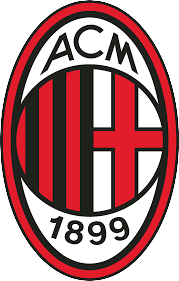
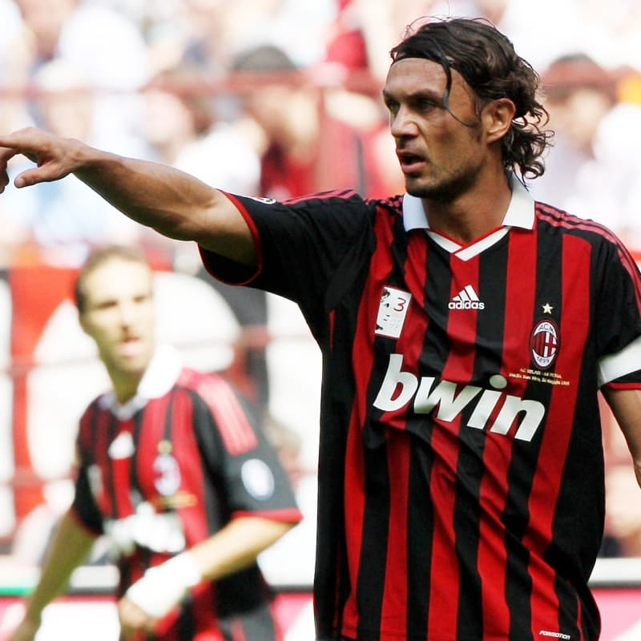

تیم میلان

اَسوچیاتزیونه کالچو میلان (ایتالیایی: Associazione Calcio Milan :) که عموماً با نام آ. ث. میلان یا میلان شناخته میشود، باشگاه حرفهای فوتبال است که در شهر میلان ایتالیا پایهگذاری شدهاست. در ۱۶ دسامبر ۱۸۹۹ با نام «باشگاه کریکت میلان» به وسیلهٔ آلفرد ادواردز و هربرت کیلپین انگلیسی تأسیس شد و به دلیل انگلیسی بودن مؤسسان، اسم باشگاه به جای میلانو (تلفظ ایتالیایی)، میلان نام گرفت.ورزشگاه خانگی آنها سن سیرو است که با گنجایش ۸۰٬۰۱۸ نفری بزرگترین ورزشگاه ایتالیا، و یکی از بزرگترین ورزشگاههای اروپاست. میلان این استادیوم با اینتر میلان مشترکاً استفاده میکند. اینتر میلان بزرگترین رقیب آنهاست و رقابت این دو تیم شهرآورد دلا مادونینا نام دارد که یکی از مهمترین شهرآوردهای فوتبالی در جهان است.
شهر میلان
میلان (به ایتالیایی: Milano) دومین شهر پرجمعیت ایتالیا و مرکز ناحیه لومباردی در شمال این کشور میباشد.
میلان یکی از شهرهای پیشرو جهان در زمینههای اقتصاد، هنر، مد، آموزش، حملونقل، سرگرمی، معماری و رسانه هاست.
در ابتدای سده ۶ (پیش از میلاد) توسط اینسوبریها ساخته شد و در ۲۲۲ پ.م. توسط رم باستان فتح شد و نام آن به مدیولانوم تغییر یافت. اهمیت این شهر به تدریج تا تبدیل شدن به پایتخت امپراتوری روم غربی افزایش یافت. در طول زمان، نقشهای مختلفی در تاریخ ایتالیا ایفا کرد که از جمله میتوان به پایتخت و مرکز سیاسی و فرهنگی دوکنشین میلان در دوران رنسانس و پایتخت پادشاهی ایتالیا در دوران ناپولیونیک اشاره کرد.
افتخارات میلان
UCL : X7
uefa supper cup :X5
Serie A : X18
Coppa italy : X5
برخی از بازیکنان معروف میلان

مالدینی
نستا
گتوسو
اینزاگی
کاکا
پیراهن های میلان در سال 2020-2021
کیت اول
کیت دوم
کیت سوم